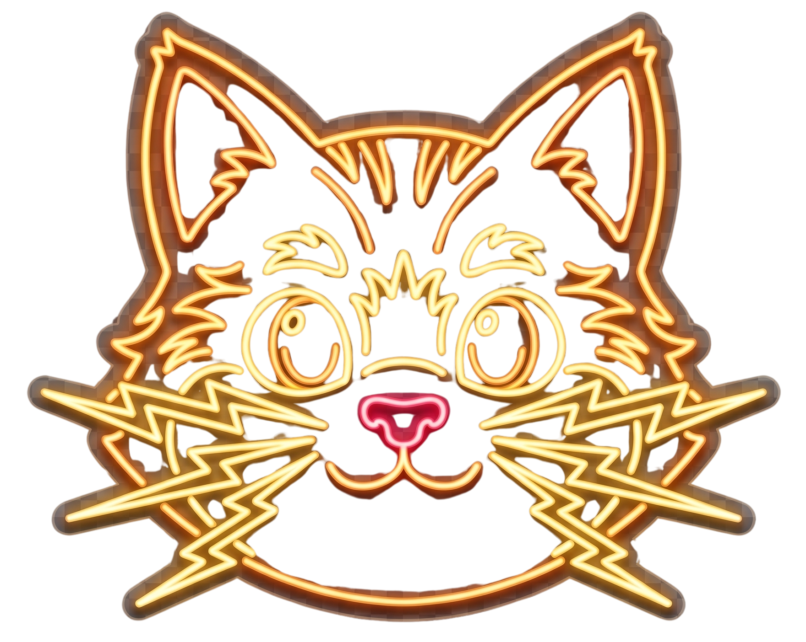
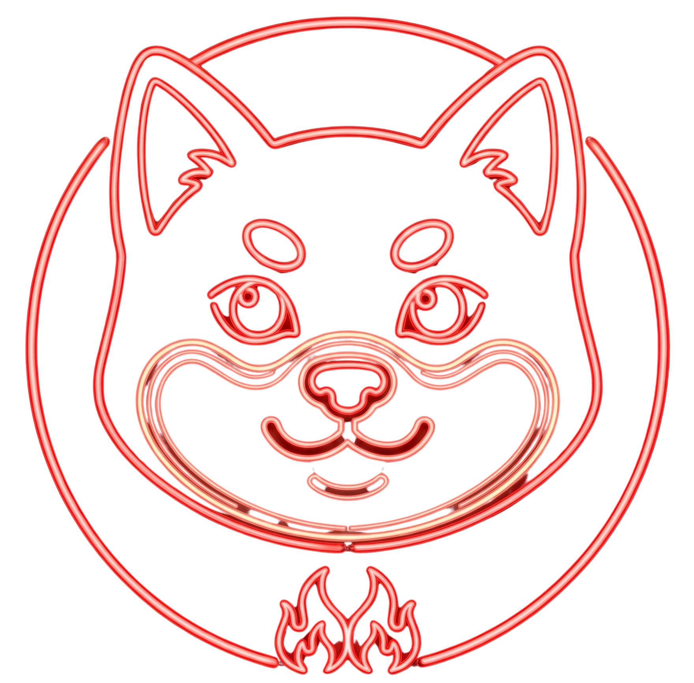
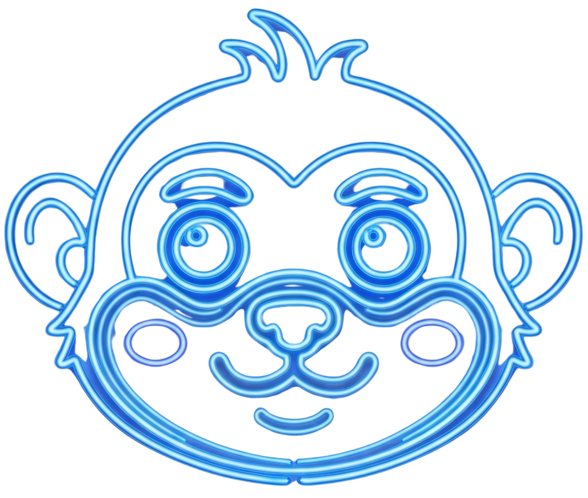
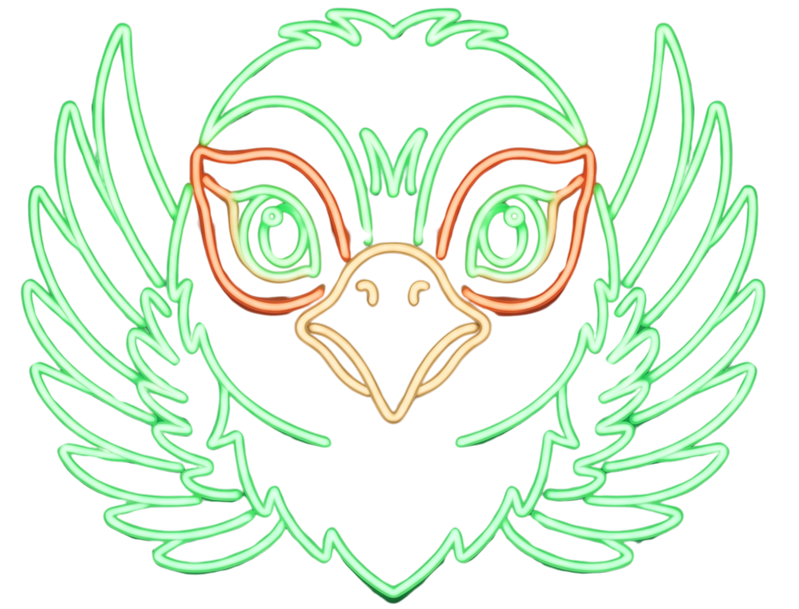

AI Creative Lab
AIクリエイティブ
AIクリエイティブ
自由研究
AIを使った表現・創作の自由研究として、文章・画像・動画・漫画など、新しい表現の可能性を探っています。 ここには、実際に作った作品や、制作途中の実験を少しずつ増やしていきます。




増えていく研究テーマ
このページは、完成作品だけではなく、作りながら学んだことも置いていく実験場です。
Manga
ナレッジモンスター｛ナレモン｝
知識と経験から生まれたモンスターたちと旅する、AIと作る漫画・キャラクター企画。
Story
物語づくりの実験
設定、世界観、セリフ、ページ構成をAIと一緒に組み立てる研究。
Video
Study Session
動画・ショート化
漫画や活動ログを、短い動画や紹介コンテンツへ展開するための準備場所。
GitとGitHubのお勉強会
今回実際に行ったPR作成、確認、マージの流れを、初心者向けの勉強会コンテンツに育てます。